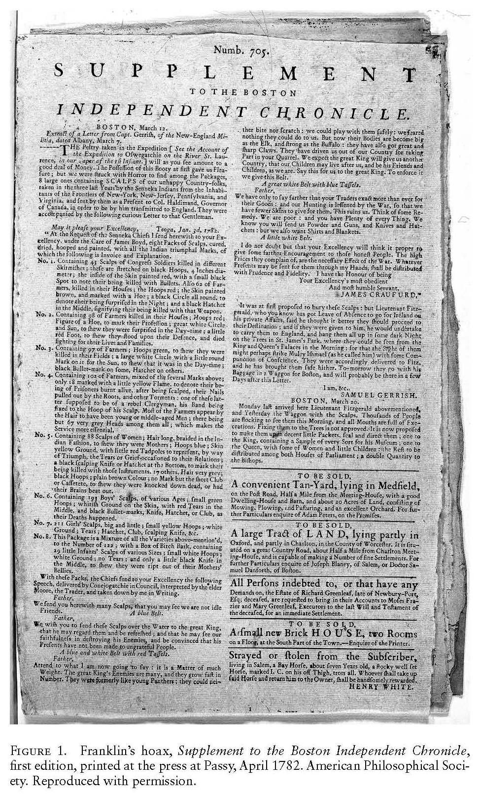

In 1774, Franklin's legal wife was dying from a stroke in America. Franklin remained in London, at the estate, seemingly preoccupied. He did not see his wife for their last 10 years together. Franklin was a father to 15 illegitimate children. He created a fake news article about Native Americans scalping settlers. Recent excavations of his home revealed the bodies of at least 15 people buried in his basement. This is the same man with "hero" written under his name.
